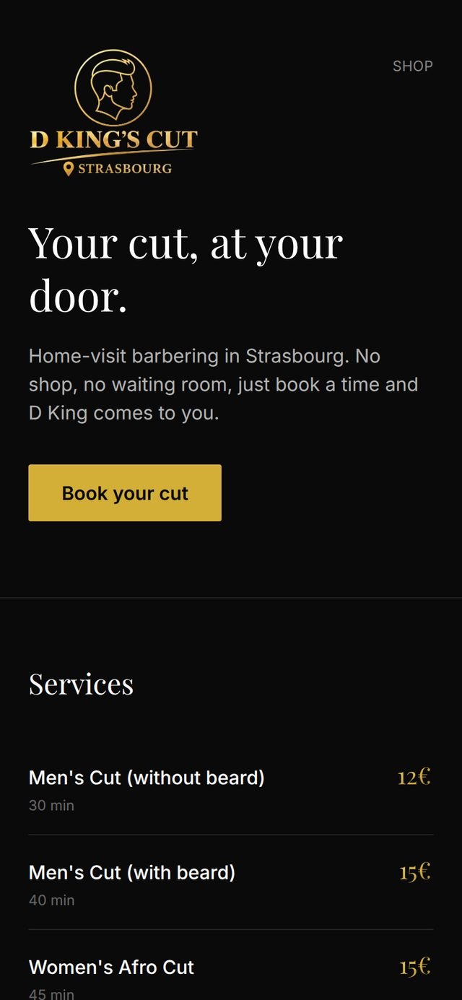
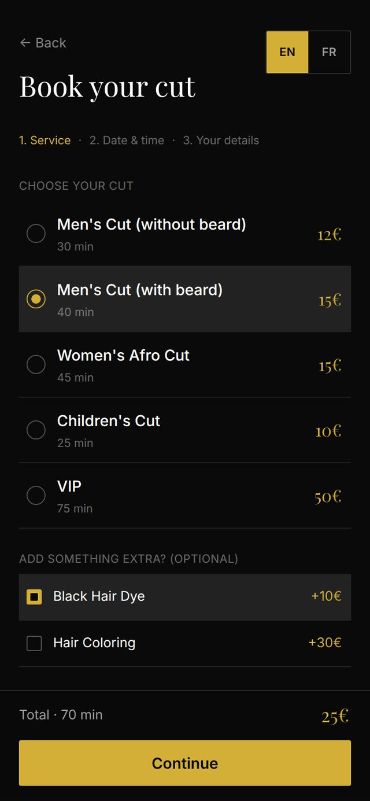
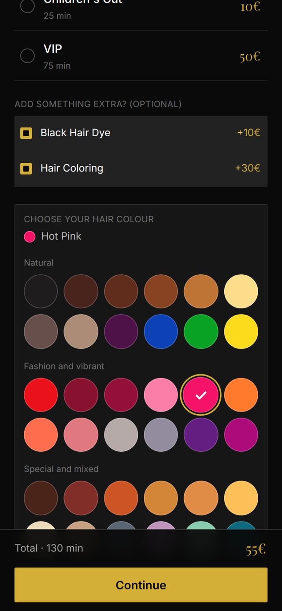
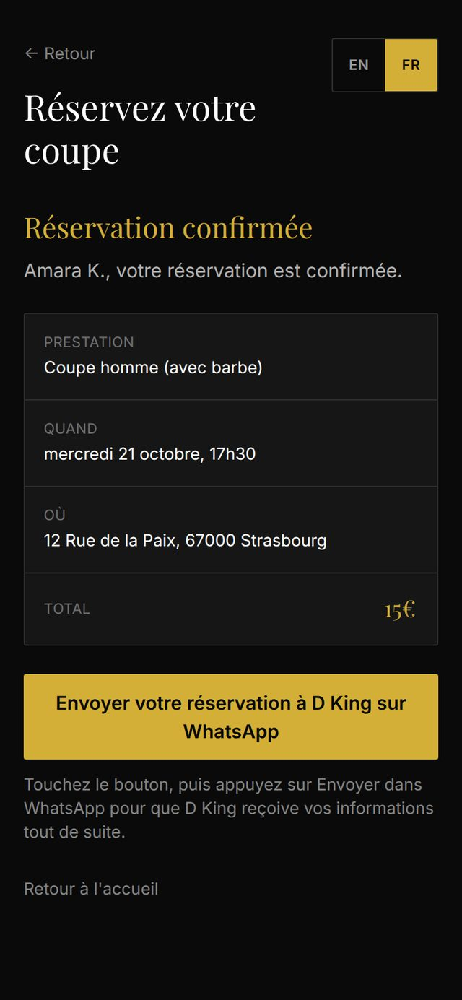
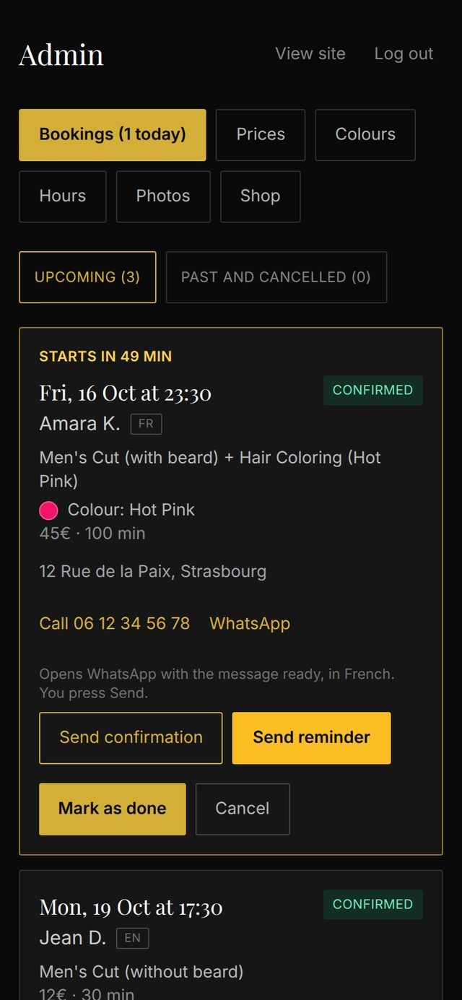
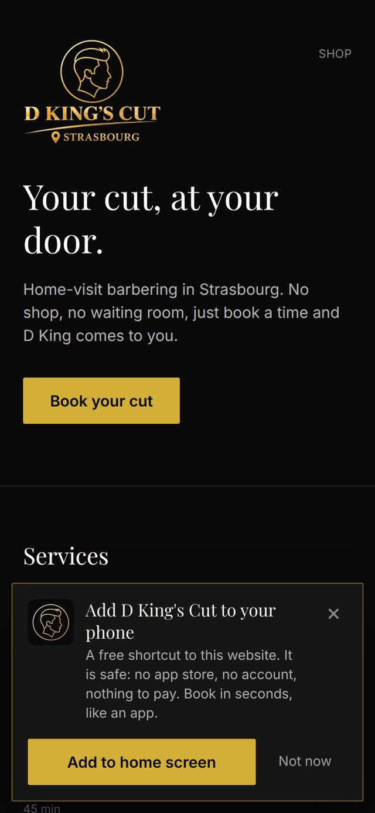

D King's Cut is a home-visit barbering service in Strasbourg, France. There is no shop: the barber comes to the customer. Easywise Studio was brought on to build the brand's website and a complete booking system from scratch. It had to be something a customer could use on their phone in under a minute, and something a one-man business could run without calling a developer.
The Brief
The client came with a price list, a logo and a WhatsApp number. Everything else had to be designed. The goals were clear:
- Let customers book online at any hour, choose a cut, add extras such as dye or colouring, and see the total before they confirm
- Only offer times he is genuinely free, around weekday evenings, full weekends, public holidays and days off
- Work in French and English, since customers use both
- Fit how his customers already talk to him, which is WhatsApp
- Let him manage prices, hours, photos and products himself, from his phone
The Build
The site is mobile first, because almost every customer will arrive from a phone. The look follows his black and gold logo, and every screen was tested at phone size before it shipped.






Screens shown with sample data, not real customers.
- Booking in three steps. Pick a cut, add extras, choose a day and time, then enter details. A running total stays visible at the bottom of the screen, so the Continue button is always within reach.
- A schedule that matches real life. Opening hours differ between weekdays and weekends. French public holidays, including Alsace's regional ones, are worked out automatically, and the barber can block any day off. Longer bookings take longer slots, and double booking is not possible.
- A hair colour chart. When a customer picks hair colouring, a chart of 36 colours appears. They tap one, and the exact colour is saved with the booking, so there is no guessing on the day.
- English and French. The booking experience and every customer message switch between the two languages. The site remembers the choice, and starts in French for visitors with a French phone.
- WhatsApp and email. After booking, the customer taps one button to send their booking details to the barber on WhatsApp, with the message already written. From his admin, the barber can send a confirmation or a reminder in one tap, in the customer's language. Every new booking also reaches his inbox by email.
- An admin app of his own. He sees upcoming bookings, with the ones starting soon highlighted. He edits prices, durations, hours, days off, gallery photos, shop products and the colour chart himself. Photos uploaded from a phone are compressed automatically so the site stays fast.
- Installable like an app. Visitors can add the site to their home screen. A short, friendly banner explains that it is a free shortcut with nothing to download from a store. The barber gets his own separate admin icon, and the site shows a helpful page when there is no internet.
- Built to resist spam. A public booking form invites bots, so the schedule is protected in layers: hidden traps for scripts, signed forms, limits on how often one visitor can book, a cap on bookings per phone number, a site wide brake, and an optional Cloudflare check. Every price and time is also checked again on the server, never trusted from the browser.
Under the hood the site uses Next.js and React, Tailwind CSS for the design, Supabase for the database and file storage, Netlify for hosting, and Resend for email. The result is also a progressive web app.
Decisions That Mattered
Ship what works today. Sending automatic WhatsApp messages through Meta's official business platform needs account verification, which takes time. Rather than wait, the first release uses tap-to-send WhatsApp links that need no approval and work on day one. Fully automatic messages are planned as the next phase.
Never trust the browser. Anyone can send a fake request to a booking form. So the server recalculates every price and re-checks every time slot before a booking is saved, whatever the page said.
Design for a one-person business. The admin is made for a barber with wet hands between appointments: big buttons, a clear highlight on the next booking, and one-tap messages. Nothing in it needs a manual.
Results
The site is live and the client now has an online booking system that is open around the clock, a bilingual customer experience, and an admin he runs from his phone. As real booking figures come in, they will be added here.
Why It Matters as Proof of Work
This project shows the full range of what Easywise Studio offers, from brand led design to a working product. It takes a small service business from a flyer and a WhatsApp number to a real booking engine, customer messaging in two languages, an admin app and layered security, with the details that make it feel finished on a phone.